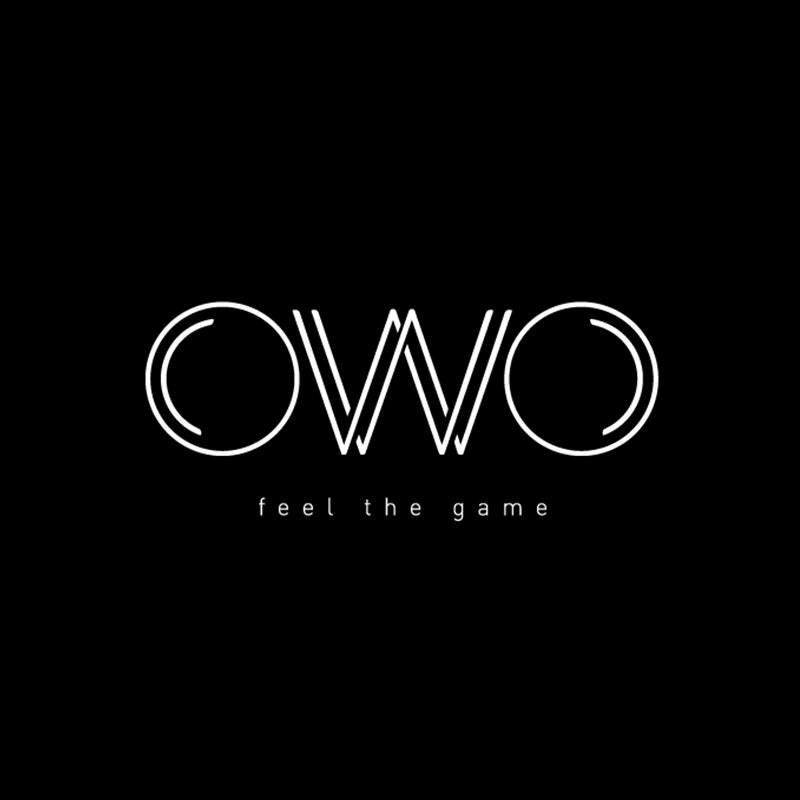
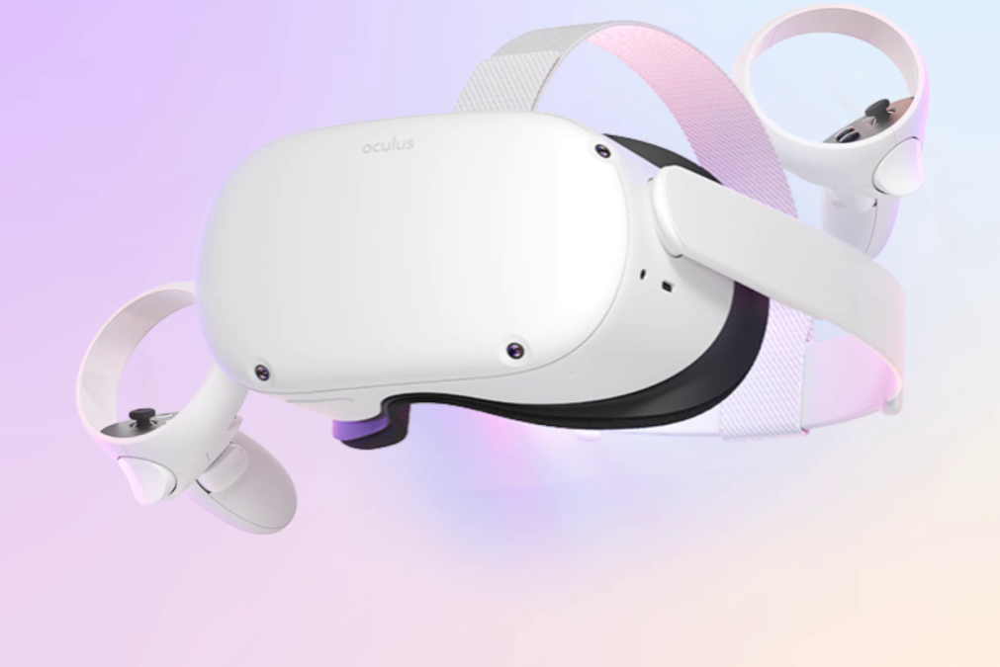
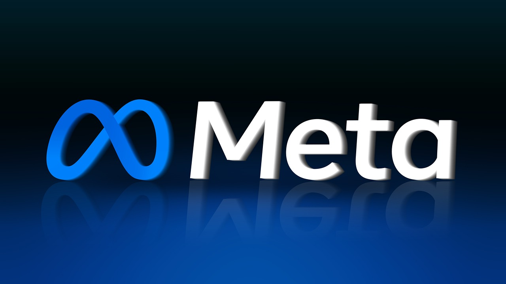

A new consumer level haptic suit that uses electrodes to stimulate your muscles will be released sometime this year. This revolutionary new haptic suit is called the "OWO Skin" and it works similarly to a tens unit.
The OWO Skin will allow for the actual feeling of a muscle contracting when you are punched in a game, but in real life. This will allow for fantastic immersion and it is truly revolutionary for the beginnings of a new, more virtual world. The suit can let you feel something as precise as a pin tapping your arm, or something as painful as being punched in the stomach by Dwayne "The Rock" Johnson.
"When I was at CES 2022 I tried out the OWO Skin and it was crazy, it reminds me of when I was punched in the stomach by Dwayne 'The Rock' Johnson. " ~ Zariah Neville
The haptic suit is set to release at about $500 and will work on both PCVR and Quest platforms. Is this the first step towards a new norm or just another crazy idea that is destined to flop?

For the last year there have been leaks about a new addition to the quest lineup and it seems as though two new headsets could be added, dubbed by the community "Quest Plus" and "Quest Pro". These new headsets would feature full face tracking, positional tracking for controllers, and color passthrough with no distortion. These would be the first major leap towards Meta's end goal of being the center of the Metaverse. Only time can tell the credibilility of these claims but it'll be interesting to see how this develops. We'll keep you updated!

On Febuary 2nd the Meta stock price plummeted by over 30%, to put this in perspective it is about 250 Billion Dollars due to expenses such as the Oculus platform they are building, as well as some of their more secretive projects that were set to come out very soon. Also because of Apple's iOS update that alllows for app tracking to cease on certain apps that the user can decide on. This has cut off a massive part of Meta's revanue and investors are not happy with this, if google and microsoft follow suit then Meta could very well be dead. If their "Metaverse" fails, who will step up to bat? Pymax? Valve? HTC?
